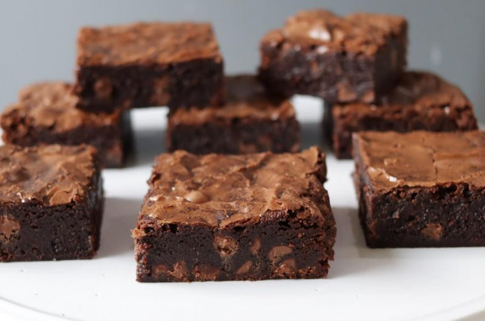

Explore Sweet Temptations
Welcome to "Explore Sweet Temptations," your go-to destination for delightful dessert inspiration! Whether you're a baking enthusiast or simply have a sweet tooth, get ready to discover a world of decadent treats.
Explore our mouthwatering collection of dessert recipes, categorized for your convenience:
Classic Vanilla Cake
Chocolate cupcakes
Chwey chocolate chip cookies
Fudgy brownies
Classic apple pie
Spinach and Feta quiche
Vanilla ice cream
Mixed berry sobert
Gluten-free chocolate cake
Vegan chocolate chip cookies
Classic Vanilla Cake:
- Ingredients:Flour, sugar, butter, eggs, vanilla extract, baking powder, milk.
- Instructions:Cream butter and sugar, add eggs and vanilla, fold in dry ingredients, bake until golden brown.
- Decoration Idea:Frost with vanilla buttercream and decorate with fresh berries or edible flowers.
 TOP
TOP
Chocolate Cupcakes:
- Ingredients:Flour, cocoa powder, sugar, butter, eggs, vanilla extract, baking soda, buttermilk.
- Instructions:Mix dry and wet ingredients separately, combine, bake until tops spring back.
- Decoration Idea:Top with chocolate ganache or swirls of buttercream frosting.
TOP
Chewy Chocolate Chip Cookies:
- Ingredients:Flour, butter, sugar, brown sugar, eggs, vanilla extract, chocolate chips.
- Instructions:Cream butter and sugars, add eggs and vanilla, mix in dry ingredients and chocolate chips, bake until golden.
TOP
Fudgy Brownies:
- Ingredients:Flour, cocoa powder, sugar, butter, eggs, vanilla extract, chocolate chips.
- Instructions:Melt butter and chocolate, mix with sugar, eggs, and vanilla, fold in dry ingredients, bake until set.
 TOP
Classic Apple Pie:
- Ingredients:Pie crust, apples, sugar, cinnamon, nutmeg, butter.
- Instructions: Prepare pie crust, fill with spiced apple mixture, top with lattice crust, bake until golden.
TOP
Spinach and Feta Quiche:
- Ingredients:Pie crust, spinach, feta cheese, eggs, cream, onion, garlic.
- Instructions: Blind bake pie crust, sauté onions and spinach, whisk eggs and cream, mix in cheese and vegetables, bake until set.
TOP
Vanilla Ice Cream:
- Ingredients:Heavy cream, milk, sugar, vanilla bean or extract, egg yolks.
- Instructions:Heat cream and milk with sugar, temper egg yolks, cook to custard, chill, churn in ice cream maker.
 TOP
TOP
Mixed Berry Sorbet:
- Ingredients:Mixed berries (e.g., strawberries, blueberries, raspberries), sugar, lemon juice.
- Instructions:Blend berries with sugar and lemon juice, strain, freeze in ice cream maker.
TOP
Gluten-Free Chocolate Cake:
- Ingredients:Gluten-free flour blend, cocoa powder, sugar, butter, eggs, vanilla extract.
- Instructions:Mix dry and wet ingredients, bake until cooked through, frost with ganache or buttercream.
TOP
Vegan Chocolate Chip Cookies:
- Ingredients:Vegan butter, sugar, brown sugar, flaxseed meal (as egg substitute), vanilla extract, flour, chocolate chips.
- Instructions: Cream vegan butter and sugars, add flaxseed meal and vanilla, mix in flour and chocolate chips, bake until golden.
 TOP
TOP
Each recipe includes detailed instructions, ingredient lists, and tips to help you recreate these delightful desserts at home. Experiment with flavors, decorations, and variations to make each recipe your own. Whether you're new to baking or a seasoned pro, there's always something exciting to explore in the world of desserts!